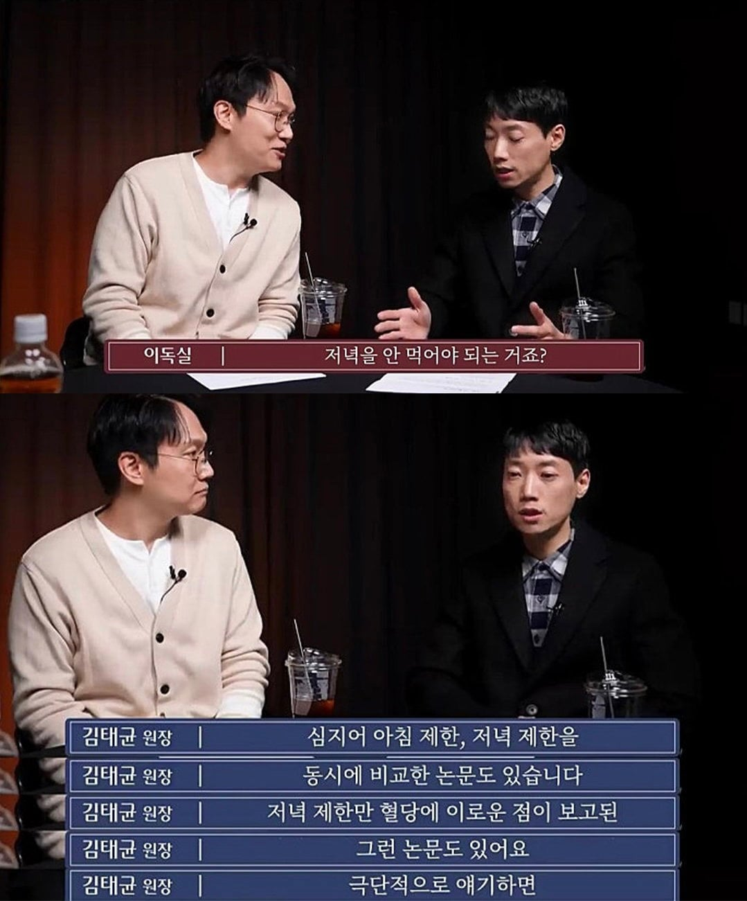
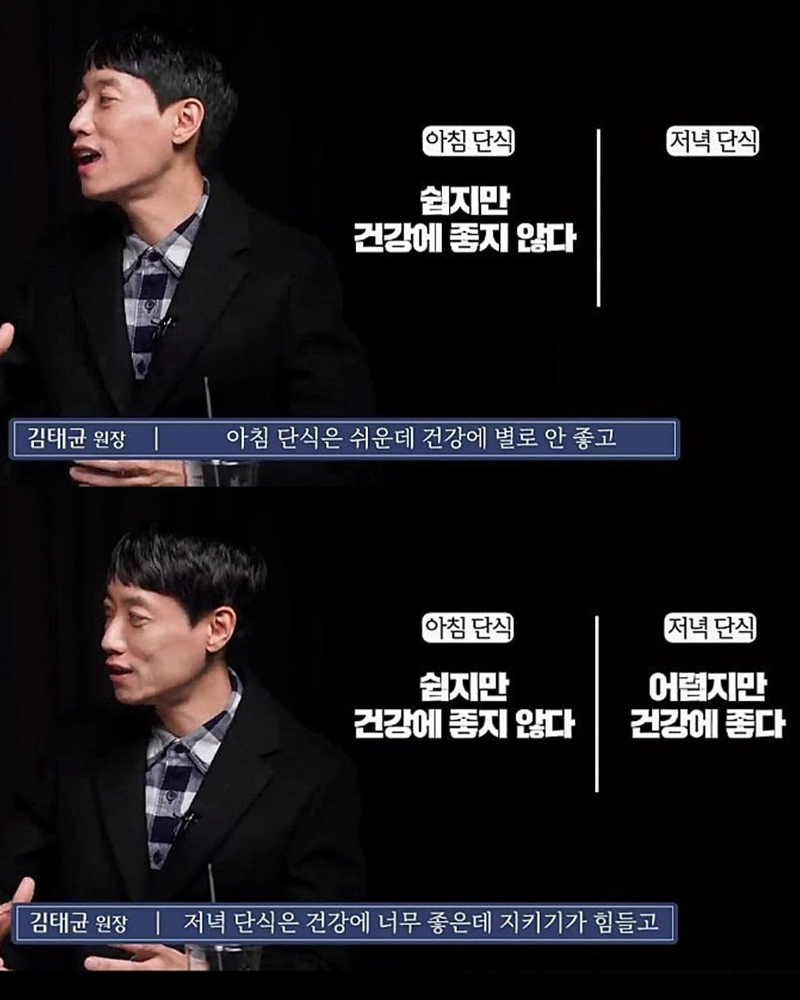
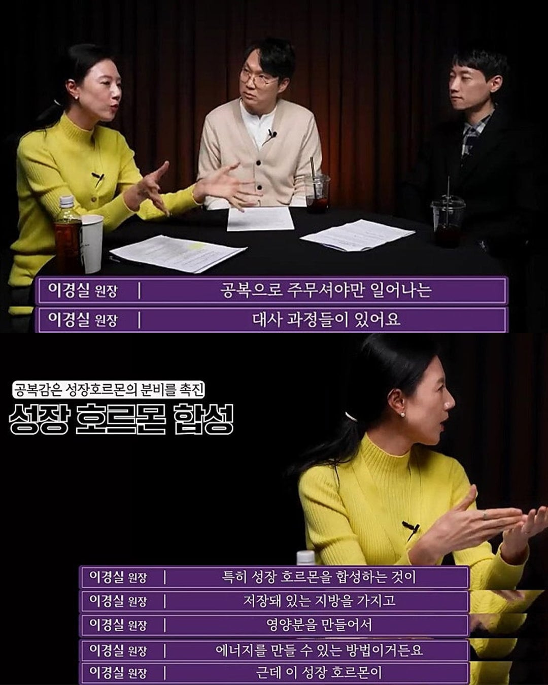
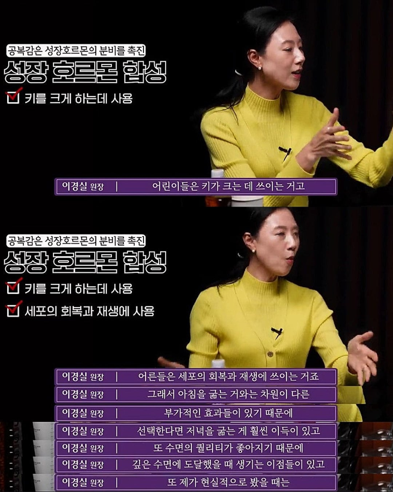

쉽지않음




쉽지않음
일 끝나면 6~7시인 사람들이 집에 오면 8~9시 되는 사람들도 수두룩 빽뺵하고, 그 전에 밥 제대로 못 챙겨 먹는 사람 수두룩인데... 저녁을 어떻게 안 먹겠음; 단순히 어렵다로 끝낼 말이 아니겠지 이 사람들에겐 ㅠ
조금만 먹으면?
그리고 별개의 이야긴데 난 롤하다가 자면 압도적으로 피곤함
늦게자는것도 문제인데 각성상태가 유지되는듯
듣고보니 그저께 야식으로 못참고 삼김 2개, 제사라 꼬지 5개, 식혜 두사발 드링킹했는데 다음날 몸 상태 존나 안좋긴했음
진짜임?
첫끼 11시 점심 13시 저녁 17시 먹는데 왤케 살이붙냐..
걍 삼시세끼 꼬박꼬박 잘먹는 루트 타는중
다른건 모르것고 야식 먹고 잠들면 담날 아침에 개 피곤해,,,,
배고프면 잠을 못자고 설령 잠들어도 자다가 깨서 배고파서 먹고 잠.그걸 이겨내라고? 잠이 보약이야 씨발련아.
그건 처음에만 그럼. 나도 해봤는데 2주만 참으면 그다음부턴 배고픔 자체가 완전히 사라짐.
왜냐면 어차피 그거 가짜 배고픔이기 때문에. 내가 진짜 영양소가 부족해서 굶어죽을 것 같아서 배고픈게 아니잖아
됏고 빨리 약만들어 ㅋㅋ 위고비의 다음 다음 개선제는 근육도 안빠진다매 ㅋㅋ
개인적으론 오후 5시에 저녁 먹는 게 젤 낫더라
일찍 먹는 거 자체가 힘들고 잠을 일찍 자질 않아서 문제지ㅋㅋㅋㅋㅋ
응 족발먹을거야~
위고비나 마운자로 맞으면 가능한가?
아뿔싸 맥주먹는중인데;;
저녁 일찍 먹으면 다음날 속 편하고 가벼움. 잠도 잘오고
게운하고 속도 편하더라 인정한다.
하지만 난 매일 진다.
그거 먹겠다고 사는거야.
나 학생떄 자는게 좋아서 밥 안먹고 걍 잤는데 그래서 키 적당히 큰건가
저 논리대로면 꾸준히 저녁먹는 애들은 땅꼬마 된다는거냐
우유 한 잔 같은 간단한 것도 안 되려나 나도 배고프면 잠을 못 자는 타입인데